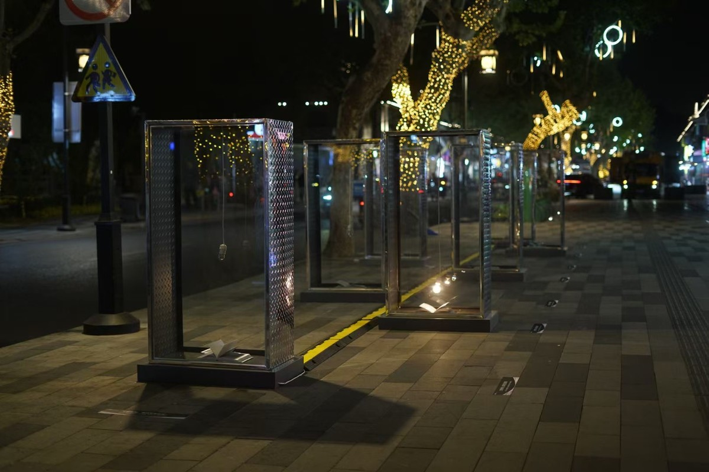
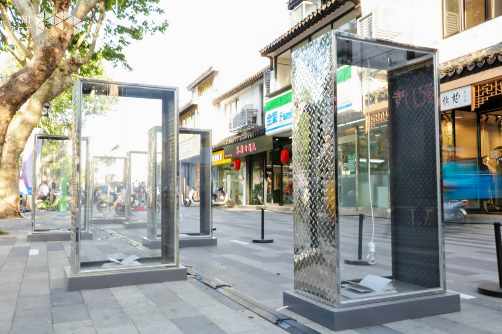
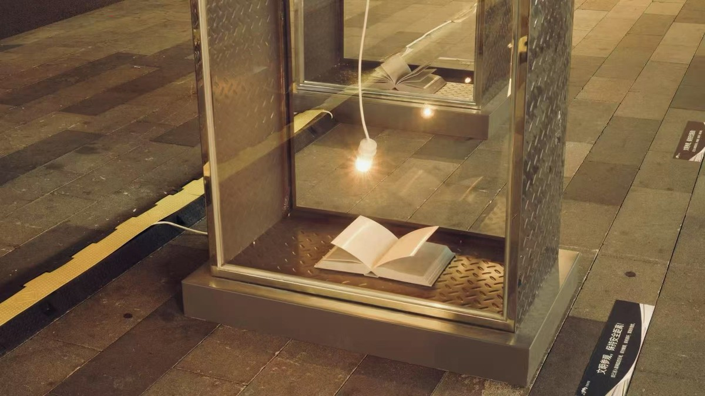

思第一缕光 | THE FIRST FLICKER OF LIGHT

不锈钢板、玻璃、单片机、白炽灯、树脂打印，150x80x45cmx7，2025
Crafted from stainless steel panels, glass, microcontroller units, incandescent bulbs, and resin 3D-printed components. Dimensions: 150 cm (H) × 80 cm (W) × 45 cm (D) × 7 units. 2025.
作品位于苏州市十全街百年名校振华中学（振华女中）与苏州大学之间的路口，七盏灯泡照亮七本“无字书”，灯泡以莫斯电码的方式闪烁，闪烁的内容均来自于十全街居民与游客关于“真理”的看法。
The installation (First Flicker of Light) is sited at the junction of the century-old Zhenhua Middle School (Zhenhua Girls' School) on Shiquan Street and Suzhou University in Suzhou, Zhejiang, China. Seven "wordless books" rest beneath individual incandescent bulbs, each pulsing in precise Morse code. These coded flickers convey reflections on "truth" gathered from local residents and passers-by.

十全街公共艺术季，十全街，苏州
Shiquan Street Public Art Season, Suzhou
十全街公共艺术季，十全街，苏州
Shiquan Street Public Art Season, Suzhou

十全街公共艺术季，十全街，苏州
Shiquan Street Public Art Season, Suzhou